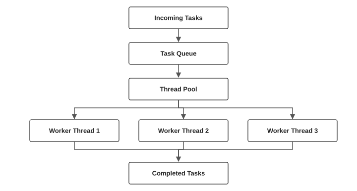

A thread pool is a software design pattern where a collection of pre-created, reusable worker threads waits in the background to handle concurrent tasks. Instead of spawning and destroying a new thread for every incoming request
or job, the application submits tasks to a shared queue from which idle worker threads pick them up.
Creating a new OS thread for every task can be expensive. Thread pools reuse worker threads.

ExecutorService executor = Executors.newFixedThreadPool(4);
for (int i = 0; i < 10; i++) {
int taskId = i;
executor.submit(() -> {
System.out.println("Task {taskId} executed by {Thread.currentThread().getName()}");
});
}
executor.shutdown();Ten tasks are submitted, but at most four pool worker threads execute tasks concurrently.
The executor manages queuing and scheduling work onto its workers.
For production systems, queue bounds, rejection behavior, shutdown and workload characteristics also matter.